A cyclic crack propagation calculation consists of a series of
increments. Each increment is considered to be independent of the others. The
input for an increment is characterized by stresses and maybe temperatures for
the uncracked structure, a triangulation of the current cracks using S3 shell
elements and crack propagation material data. The following operations are
performed before the first increment:
- catalogue the nodes belonging to the field kontri(3,1..ntri) where ntri is the total number of triangles in all cracks (cattri.f).
- catalogue the edges in fields ipoed(1..nk), iedg(3,1..nedg) and
ieled(2,1..nedg), where nk is the total number of nodes in the model and
nedg the total number of edges belonging to S3-elements. An edge is
characterized by two nodes and is catalogue according to the lowest node
number of both. Entry ipoed(n1) points to a row iedg(1..3,ipoed(n1)), in
which n1=iedg(1,ipoed(n1)) is one of the nodes and n2 = iedg(2,ipoed(n1))
n1 is the other node. If more edges are present in the mesh for which
node n1 is the lowest node number, iedg(3,ipoed(n1)) points to the next such
entry in iedg, else iedg(3,ipoed(n1)) is zero. This is similar to the
structure on the left of Figure 195, except that in the present
context the number of edges is not changed within an increment and the flag
ifreeed is not needed. For each edge i the entries
ieled(1,i) and ieled(2,i) point to the triangle numbers in kontri to which
the edge belongs. For an edge belonging to only 1 triangle entry ieled(2,i)
is zero.
- determine the boundary edges and the boundary nodes. An edge is a boundary
edge if it belongs to only one triangle. A node is a boundary node if it belongs to a
boundary edge. The boundary nodes are stored in field ibounnod(1..nbounnod),
the boundary edges in ibounedg(1..nbounedg). The field iedno(2,1..nbounnod)
contains the boundary edge numbers to which a boundary node belongs. It is
important to distinguish between the edge numbers (1...nedg), correspondng to
the rows in
field iedg, and the boundary edge numbers (1....nbounedg), corresponding to
the rows in
field ibounedg. The fields ibounnod and ibounedg together with some other
fields, which will be discussed soon, are shown in Figure
200. The nodes in field ibounnod are sorted in ascending order.
Figure 200:
Fields for the boundary nodes and edges
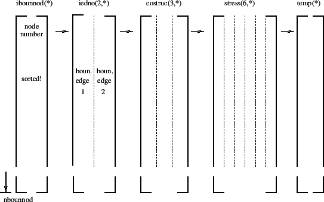 |
- determine the front nodes: these are boundary nodes (i.e. on the boundary of
the crack triangulations) lying inside the structure. The way this is done
is by taken recourse to routines interpolextnodes.f and basis.f. The latter
routine interpolates the stress and temperature from the uncracked structure
onto each boundary node. In fact, basis.f is a very general routine doing
the interpolation to whatever point characterized by its global carthesian
coordinates. It looks for a location inside the master mesh which is as
close as possible to the given point and assigns the fields interpolated in this
location. Furthermore, it returns the interpolated values, the interpolation coefficients, the nodes
of the master mesh used for the interpolation, the coordinates of the
interpolation location and the distance from the
given point to the interpolation location. If this distance is really small
(a cut-off of
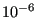
is used),
the boundary node is a front node, else it is not. The front nodes are
stored in ascending order in field ifront(1..nfront), the corrosponding
boundary node location (i.e. the row in field ibounnod) is stored in
ifrontrel(1..nfront), cf. Figure 201. The coordinates of the interpolation locations are
stored in costruc(3,1..nbounnod) and the interpolated stresses and
temperatures in stress(6,1..nbounnod) and temp(1..nbounnod), cf. Figure
200.
Figure 201:
Fields for the front nodes (before analyzing the
adjacency relations)
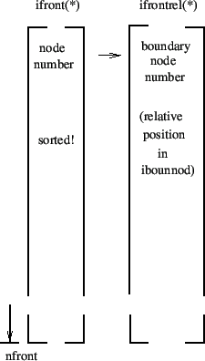 |
Notice that when using the coordinates in field costruc one obtains a
contour of the crack contracted on the structure, i.e. the boundary nodes
outside the structure are projected onto the structure.
- determine the due order of the nodes in field ifront by taking the
adjacency relations into account (done in routine adjacentbounodes.f) and
adding to each non-closed front a node on either side (start and end of
the front) just outside the structure, Figure 202. Due to
this, the value of nfront will have changed if not all cracks are
subsurface cracks. The
nodes are stored in clockwise direction when looking in the positive shell
normal direction. The start and end location of each front is stored in
fields istartfront(1..nnfront) and iendfront(1..nnfront), where nnfront is
the number of fronts. A zero in the corresponding field
isubsurffront(1..nnfront) indicates that the front belongs to a surface
crack, a one that it belongs to a subsurface crack, Figure
203. The field “field” in Figure 202 is
representative for a large number of fields: xt(3,*), xn(3,nstep,*),
xa(3,nstep,*), xnplane(3,nstep,*), xaplane(3,nstep,*), posfront(*),
acrack(nstep,*), xk1(nstep,*), xk2(nstep,*), xk3(nstep,*), xkeq(nstep,*),
phi(nstep,*), psi(nstep,*), xkeqmin(*), xkeqmax(*), dadn(*), wk1(*),
wk2(*), wk3(*), dkeq(*), domstep(*), domphi(*), ifrontprop(*), which will
be discussed further in this section.
The fronts are stored crack by crack. The start and end of each crack in
field ifront is stored in fields istartcrackfro(1..ncrack) and
iendcrackfro(1..ncrack) (Figure 204), where ncrack is the number of cracks. Figure
202 applies to a case in which the first crack consists of
two fronts.
Figure 202:
Fields for the front nodes (after analyzing the
adjacency relations)
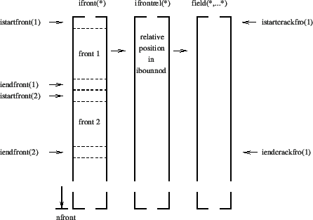 |
Figure 203:
Fields for the front characteristics
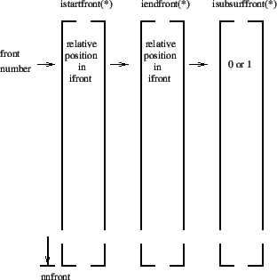 |
Figure 204:
Fields for the crack characteristics
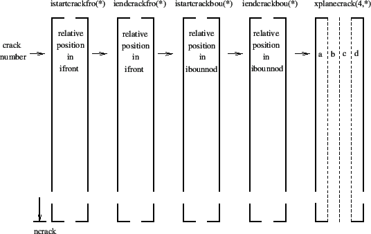 |
At the same time, also the node order in field ibounnod is changed according
to adjacency, crack by crack. Remember that this field contains all boundary
nodes, no matter whether they belong to a front or not. Therefore, each
crack in field ibounnod is a closed contour. After changing the node order
in ibounnod all related fields in Figure 200 are also modified
appropriately as well as the entries in field ifrontrel (Figure
202), so that full consistency is guaranteed. The starting and
ending position of each crack in field ibounnod is stored in
istartcrackbou(1..ncrack) and iendcrackbou(1..ncrack).
Figure 205:
Calculation of a front position external but
close to the free surface.
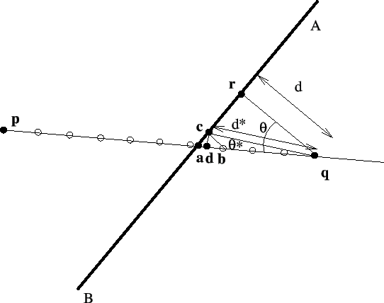 |
- The cross section location of the crack front with the external boundary is
reevaluated. Recall that this location was determined in adjacentbounodes.f
as the projection of the external boundary node closest to the structure
onto the surface of the structure (coordinates in costruc). Let us assume
that in Figure 205 the free surface is AB and nodes
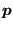
and
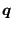
are on the front,
is
external.
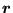
is the projection of
on the
surface and is a first approximation of the intersection point
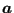
. A better approximation for
is:
However, if AB is strongly curved and 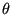
is big, this may not be a
good approximation. Therefore, if exceeds roughly 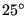
is calculated more accurately. To this purpose the interval
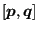
is divided into 10 segments and, starting
from
the first location is determined which is external to
the structure. In the Figure this is
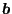
. The projection
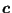
of
is now stored in costruc as the projection of
. As starting position for the propagation increment in crackprop.f (see
later on) point
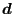
is taken satisfying the equation above with
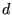
replaced by 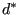
and by 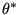
:
where
This approach has proven beneficial in guaranteeing that
is
lying outside the structure.
- A local coordinate system in each node of the crack front is created and
stored in fields xt(3,nfront), xn(3,nfront) and
xa(3,nfront). This is done in routine createlocalsys.f. It consists of:
- A local normalized tangent
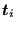
(field xt) to the crack front (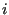
is the nodal position).
- a normal vector
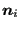
obtained by taking the mean
of the normal vectors on the shell elements to which the front node belongs,
projecting this mean vector onto a plane orthogonal to the local tangent and
normalizing. Notice that this normal vector is pointing in the positive
direction of the shell elements (field xn).
- a normalized vector in propagation direction
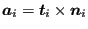
(field xa).
- Subsequently, the crack length is calculated in subroutine
cracklength.f. In Section 6.9.27 the two different ways of
calculating the crack length are explained: CUMULATIVE and INTERSECTION.
- The method CUMULATIVE is trivial to code
- The method INTERSECTION creates in each front node by means of the
tangential vector a plane locally orthogonal to this vector and checks
what other edge (but not immediately adjacent) along the closed crack
front is cut by this plane (using fields such as ibounedg). An edge is
cut by a plane if the substitution of the coordinates of its nodes into
the plane equation yields results with a different sign. In between the
front node and the intersection point a position is determined which
maximizes the minimum distance from any front node belonging to the
crack (using attach_1d_cracklength.f, distattach_1d_cracklength.f and
near3d.f) . The distance between this position and the front node is defined as
the crack length.
Figure:
Calculation of the distance of a front node from the intersection of a straight line
mit unit vector
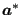
with the free surface
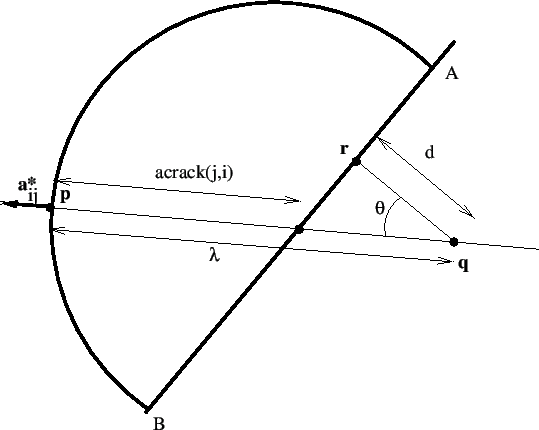 |
The crack length is
stored in field acrack(nfront). In addition, for each front node the
relative position along the front, taking a value between 0 and 1, is also
calculated in cracklength.f and stored in field posfront(nfront).
- The crack length is smoothed and shape factors are determined in
routines cracklength_smoothing.f and crack shape.f, respectively. The
procedures are described in Section 6.9.27. For the shape factors
a field shape(3,nfront) is created, allowing for different shape factors
according to the mode. Routine shape.f is conceived as a user subroutine, so
the user can easily code his/her own shape factors.
- The stress intensity factors for mode I, mode II and mode III are
calculated in stressintensity.f and stored in fields xk1(nstep,nfront),
xk2(nstep,nfront) and xk3(nstep,nfront). The equivalent stress intensity
factor, the deflection angle and twist angle are stored in
xkeq(nstep,nfront), phi(nstep,nfront) and psi(nstep,nfront). Subsequently,
the equivalent K-factor and the deflection angle is smoothed in
stressintensity_smoothing.f. The target crack increment length is
determined in calcdatarget.f. For details the reader is again referred to
Section 6.9.27.
- The crack propagation rate is calculated in routine crackrate.f. Again,
this routine is conceived as a user subroutine. Right now, a rather simple
algorithm is implemented using the maximum equivalent K-factor for the
complete mission at a given location along the crack front. More
sophisticated procedures are conceivable using cycle extraction such as in
[85]. Output of this routine includes the crack propagation
increment da(nfront), the crack propagation rate dadn(nfront), the worst
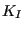
, 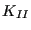
and 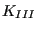
factors wk1(nfront), wk2(nfront) and
wk3(nfront), the largest and smallest equivalent K-factor in the mission
xkeqmin(nfront) and xkeqmax(nfront), the equivalent stress intensity range
of the main cycle dkeq(nfront), the dominant step dompstep(nfront) and the
dominant deflection angle domphi(nfront). The number of cycles in this
increment is calculated based on the target crack increment and the maximum
crack propagation rate anywhere along a crack front.
- In crackprop.f the position of the propagated node is calculated for
each front node. The propagation is in the direction of
. At a free boundary the new crack front has to cut the
free surface, therefore at least the first and last node on a front have
to lie outside the structure. This is checked by the interpolation routine
basis.f. If e.g. the first node is inside the structure, the line segment
connecting the node with its propagated position is rotated in steps of
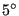
until the propagated node lies outside the structure. In
order for this procedure to work under all circumstances a minimum crack
propagation increment of
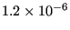
[L] is defined.
Notice that for this procedure to work properly, the first and last node of
the actual front have to lie on the intersection of the front with the free
surface. This is not necessarily guaranteed by using the field
costruc. Indeed, the values in costruc are determined in routine basis.f. If a
node is inside the structure, costruc contains its actual coordinates, if it
is outside the structure, it contains the coordinates of its projection onto
the free surface. If the front makes an angle with the free surface which is
significantly different from 90, the projection will not lie on the
front. Therefore, for the end nodes a correction is made similar to Figure
206: assuming
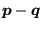
is the crack front,
the projected position
is replaced by
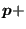
acrack(i)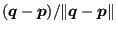
.
The propagated node numbers are stored in
ifrontprop(nfront).
- Subsequently, on the new crack front consisting of the propagated nodes
nodes are inserted or existing nodes are removed in order to establish a
distance between the propagated nodes approaching the
mean distance between any two nodes on the initial front. This latter
quantity is stored in charlen(1..nnfront). The detailed approach is as
follows: between any propagated nodes
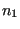
and 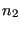
the distance is
calculated, divided by the targeted distance, and mathematically rounded to
the nearest integer. If this integer is zero, node is removed and the
calculation is repeated for and the node next to . If this
integer is one, is kept and is considered to be a new node (with a new
node number). If it exceeds one, let's say it is 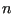
, 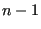
equidistant nodes are inserted in between and . These nodes are
together with the new nodes. All new nodes are stored in fields
ifronteq(1..nfronteq), istartfronteq(1..nnfront) and
iendfronteq(1..nnfront), which are completely analogous to ifront,
istartfront and iendfront.
- Finally, the mesh describing the crack is extended by the new
increment. To this end new elements are generated connecting the nodes on on
the actual front
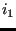
, 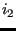
, ..., 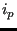
with the propagated equidistance nodes 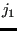
,
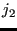
, ...,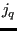
. First, for each node 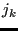
the node among the actual nodes
, .... is looked for which is the closest neighbor (using routine
near3d.f). Let us call
this node 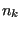
. Then, the algorithm for the triangulation is as follows:
- set
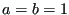
- start loop
- create a triangle , and .
- If
, then let's say that (c naturally exists, since
belongs to the actual front). Then, create triangle , ,
, triangle , , .. until triangle
, , where
. Set to .
- if and both belong to the last created triangle, exit.
- set to .
- cycle loop
Notice that shell elements are expanded in CalculiX. Therefore, at the start
of routine crackpropagation.c the crack surfaces are really modeled by
6-node wedge elements. Therefore, the extension of the crack is also modeled
by wedges with a very small thickness.
- store the incremental results into global fields (wk1glob,....)
- start a new increment
After all increments have been calculated (or if nowhere along the crack front
propagation occurred or if was exceeded anywhere along the crack
fronts) the results are stored in frd-format.